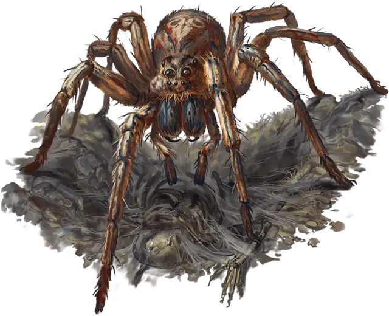

Гигантский паук-волк
Giant Wolf Spider
Средний Зверь, без мировоззрения

Класс Доспеха 13
Хиты 11 (2к8 + 2)
Скорость 40 футов, лазая 40 футов
| мод | спас | ||
|---|---|---|---|
| СИЛ | 12 | +1 | +1 |
| ЛОВ | 16 | +3 | +3 |
| ТЕЛ | 13 | +1 | +1 |
| мод | спас | ||
|---|---|---|---|
| ИНТ | 3 | −4 | −4 |
| МДР | 12 | +1 | +1 |
| ХАР | 4 | −3 | −3 |
Навыки Восприятие +3, Скрытность +7
Чувства слепое зрение 10 футов, тёмное зрение 60 футов, пассивное Восприятие 13
Опасность 1/4 (50 опыта)
Бонус мастерства +2
Среда обитания Лес, Луг, Побережье, Пустыня, Холмы
Особенности
Паучье лазание. Паук может лазать по сложным поверхностям, включая потолки, без совершения проверок характеристик.
Чувство паутины. Находясь в контакте с паутиной, паук знает точное местоположение всех других существ, находящихся в контакте с той же паутиной.
Хождение по паутине. Паук игнорирует ограничения перемещения, вызванные паутиной.
Действия
Укус. Рукопашная атака оружием: +3 к попаданию, досягаемость 5 футов, одно существо. Попадание: Колющий урон 4 (1к6 + 1), и цель должна совершить спасбросок Телосложения Сл 11, получая урон ядом 7 (2к6) при провале, или половину этого урона при успехе. Если урон ядом уменьшает хиты цели до 0, цель остается стабилизированной, но отравленной на 1 час, даже если позже восстановит хиты, и она парализована, пока отравлена таким образом.
Описание
Гигантский паук-волк, чей размер меньше, чем у обычного гигантского паука, охотится на открытой местности, скрываясь в ямах, трещинах или кучах мусора.